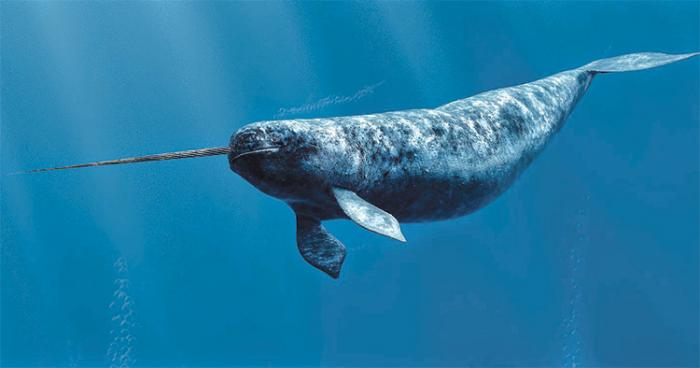

A Importância da Conservação
O narval ou unicórnio-do-mar é uma baleia dentada de tamanho médio e o animal com os maiores caninos. Vive durante todo o ano no Ártico. É uma das três espécies vivas de baleias da família Monodontidae

Comprimento: 5,1 m (Adulto) Nome científico: Monodon monoceros Peso: 940 kg (Adulto) Nível Trófico: Carnívoro Período de Gestação: 14 meses